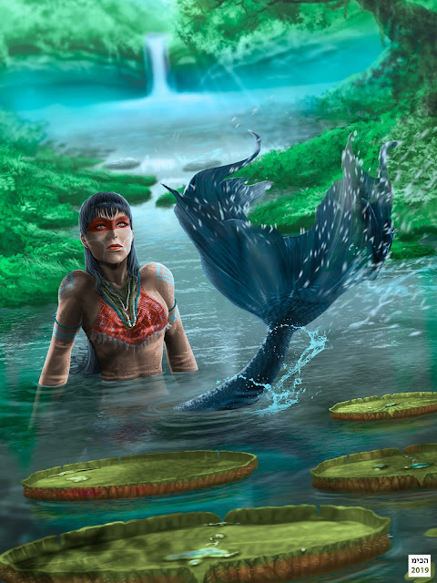
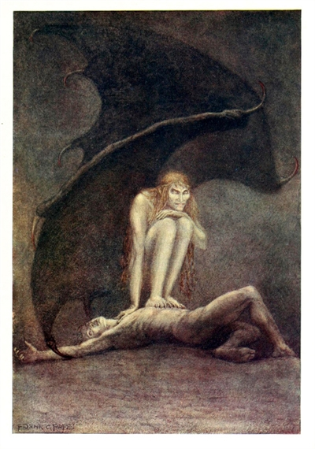

Alguns Contos
Saci Perere

O saci-pererê é um ser mítico que habita as florestas e tem como grande característica o fato de ser travesso e pregar peças nas pessoas. Ele é um ser pequeno, com cerca de meio metro de altura, embora existam versões da lenda que falem que ele pode chegar a ter três metros de altura, se quiser.
Seguindo a descrição, na lenda saci é negro e possui apenas uma perna, com a qual se locomove rapidamente. É conhecido também por não possuir cabelos e nem pelos corporais, usar um gorro vermelho na cabeça e praticar o hábito do fumo pelo cachimbo. Algumas versões da lenda apresentam-no com olhos vermelhos, enquanto outras não trazem essa característica.
Como mencionamos, a imagem clássica do saci mostra-o como um ser mítico e travesso que realiza brincadeiras, e, por isso, muitas menções do passado referem-se a ele como “endiabrado”. Por ser agitado, saci costumeiramente está realizando travessuras por onde passa. Importante mencionar que dentro da lenda não existe apenas um saci, podendo existir vários realizando suas travessuras ao mesmo tempo.
Iara

A Iara é uma figura da mitologia brasileira, um dos seres do folclore conhecidos como "sereias brasileiras". Segundo a lenda, a Iara é uma bela mulher com longos cabelos negros e uma voz encantadora que vive nos rios da Amazônia. Ela tem o poder de atrair os homens com seu canto sedutor e levá-los para as profundezas das águas, onde são afogados.
Diz-se que a Iara era originalmente uma jovem indígena que se afogou em um rio e se transformou em uma sereia. Ela é conhecida por sua beleza e por seduzir pescadores e viajantes com sua voz hipnotizante. Aqueles que são atraídos por ela acabam se perdendo nas águas e nunca mais são vistos.
A lenda da Iara serve como um aviso para os perigos das águas e para a cautela ao se aventurar nos rios. Ela também simboliza a força e a sedução da natureza. A história da Iara é transmitida de geração em geração e faz parte da rica cultura folclórica brasileira.
Pisadeira

A Pisadeira é uma figura do folclore brasileiro associada a uma criatura que causa sensações de sufocamento durante o sono. Ela é descrita como uma mulher idosa, magra e com longas unhas, que possui o hábito de pisar no peito das pessoas enquanto dormem, causando uma sensação de opressão e dificuldade para respirar.
Diz-se que a Pisadeira aparece principalmente durante a fase de transição entre o sono e a vigília, quando a pessoa está em um estado de sonolência. Ela é conhecida por se alimentar da energia vital das pessoas enquanto elas dormem.
A lenda da Pisadeira serve como uma explicação folclórica para o fenômeno conhecido como paralisia do sono, uma condição em que a pessoa acorda temporariamente, mas fica incapaz de se mover ou falar. Essa sensação de paralisia e opressão no peito pode ser atribuída à presença da Pisadeira.
A história da Pisadeira é transmitida oralmente de geração em geração e faz parte da rica cultura popular brasileira. Ela é usada para assustar crianças e alertar sobre os perigos de comer em excesso antes de dormir ou ter hábitos de sono irregulares. Acredita-se que evitar esses comportamentos pode ajudar a evitar a visita da Pisadeira durante a noite.
Curupira

O curupira é retratado frequentemente como um anão que possui os cabelos vermelhos e os pés ao contrário (com os calcanhares para frente). É importante reforçar que a descrição física do curupira pode variar de acordo com o local em que a lenda é reproduzida.
O curupira como protetor da floresta voltava-se contra todos aqueles que a destruíam e, por isso, era visto com grande temor pelos indígenas. Os indígenas acreditavam que o curupira aterrorizava e matava aqueles que entravam na floresta para caçar ou derrubar árvores
O pavor era tão grande que os indígenas ofereciam presentes quando entravam na floresta para impedir que fossem vitimados pelo curupira. A lenda fala que o curupira adorava receber fumo e cachaça como presentes. Além de aterrorizar os caçadores, o curupira também era responsável por fazê-los se perder na floresta e esquecer o caminho pelo qual sairiam dela
Boi Vaquim

O conto folclórico do Boi-Vaquim é uma história popular do folclore brasileiro, especialmente encontrada na região nordeste do país. Ele conta a história de um boi misterioso e encantado que possui chifres de ouro e asas.
Segundo a lenda, o Boi-Vaquim é um animal especial que vive em uma fazenda isolada. Ele é descrito como um boi imponente, de pelagem negra e brilhante, com chifres dourados reluzentes e asas majestosas.
A história do Boi-Vaquim geralmente envolve um personagem principal, como um jovem corajoso ou um vaqueiro, que parte em uma jornada em busca desse boi lendário. A busca pelo Boi-Vaquim é uma aventura cheia de desafios e obstáculos, que testa a coragem e a determinação do protagonista.
O conto do Boi-Vaquim é uma história de fantasia que combina elementos do imaginário popular, como a simbologia do boi, que é um animal importante na cultura nordestina, com elementos mágicos, como os chifres de ouro e asas. A história pode variar em detalhes e desfechos dependendo da região e da versão contada.
Essa história folclórica é uma forma de entretenimento, transmitida oralmente ao longo das gerações, e representa a criatividade e a imaginação do povo nordestino. Ela também reflete a relação estreita entre o homem e os animais no contexto rural e a busca por algo extraordinário e valorizado.
Corpo Seco

O Corpo-Seco, também conhecido como Corpo-Seco, é uma figura do folclore brasileiro que representa um tipo de assombração. A lenda conta a história de um homem malvado que foi amaldiçoado após sua morte, transformando-se em um ser assustador conhecido como Corpo-Seco.
Segundo a lenda, o Corpo-Seco é um espírito maligno que se alimenta de carne humana. Ele é descrito como um esqueleto ressequido, com a pele enrugada e presa aos ossos. Devido à maldição, o Corpo-Seco está condenado a vagar pelos caminhos e estradas à noite, assustando viajantes e causando medo.
Diz-se que o Corpo-Seco emite um som seco e rangente, como se seus ossos estivessem se quebrando a cada passo que dá. Ele também é descrito como um ser extremamente ágil e rápido, capaz de se esconder e aparecer repentinamente para assustar suas vítimas.
A história do Corpo-Seco é transmitida oralmente, especialmente em áreas rurais e interioranas do Brasil. Ela serve como uma forma de alerta para que as pessoas se comportem corretamente em vida, evitando ações maliciosas e cruéis, para não serem amaldiçoadas e se tornarem como o Corpo-Seco após a morte.
O Corpo-Seco faz parte do rico folclore brasileiro, repleto de histórias e personagens que refletem crenças populares e moralidades transmitidas através das gerações.
Mula-sem-cabeça

A Mula sem Cabeça é uma figura do folclore brasileiro que representa uma criatura amaldiçoada. Segundo a lenda, a Mula sem Cabeça é uma mulher que foi amaldiçoada por praticar relações amorosas com um padre. Como punição, ela foi transformada em uma mula sem cabeça.
A Mula sem Cabeça é descrita como um animal assustador, com um corpo de mula e fogo saindo do pescoço decepado. Ela é conhecida por aparecer durante a noite, especialmente em locais isolados, como estradas desertas e matas.
Diz-se que a Mula sem Cabeça é condenada a vagar eternamente, sendo perseguida por caçadores ou pelos próprios demônios. Ela é conhecida por emitir relinchos aterrorizantes e galopar desenfreadamente, causando medo nas pessoas que a encontram.
A lenda da Mula sem Cabeça serve como uma advertência sobre os perigos da luxúria e da transgressão das normas sociais. Ela também é usada para assustar crianças e alertar sobre os riscos de se envolver com pessoas inapropriadas e com comportamento moralmente questionável.
A história da Mula sem Cabeça é transmitida oralmente de geração em geração e faz parte do rico folclore brasileiro. Ela representa a crença popular nas consequências negativas das ações pecaminosas e a importância de seguir os princípios morais.